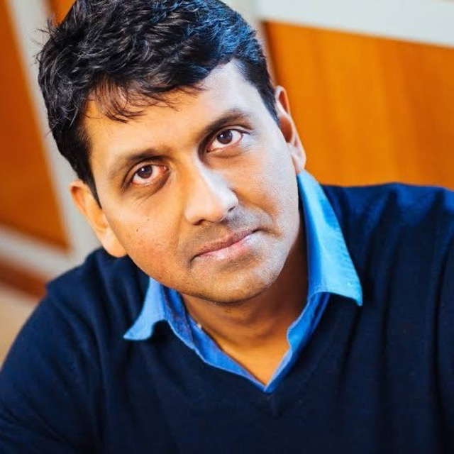
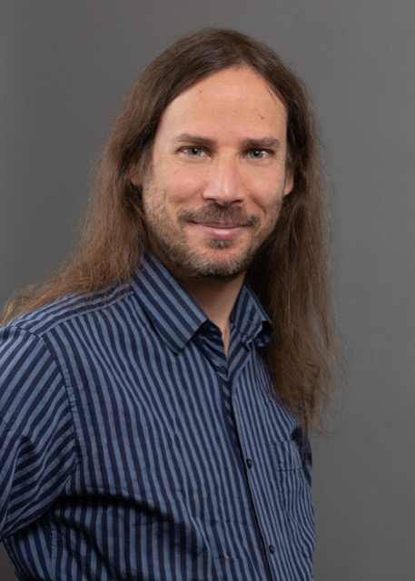
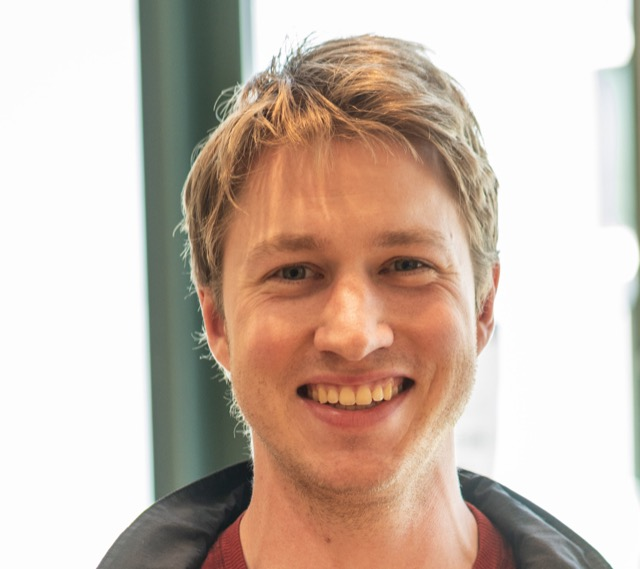
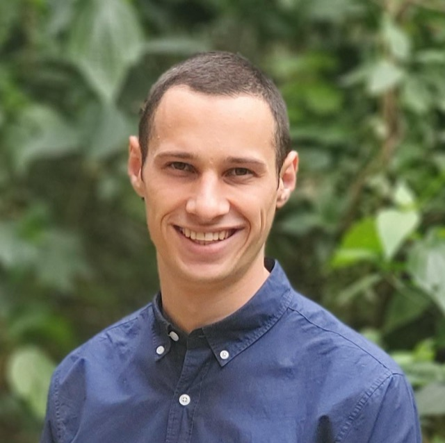
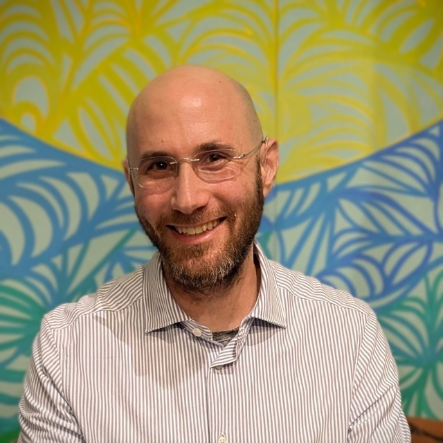
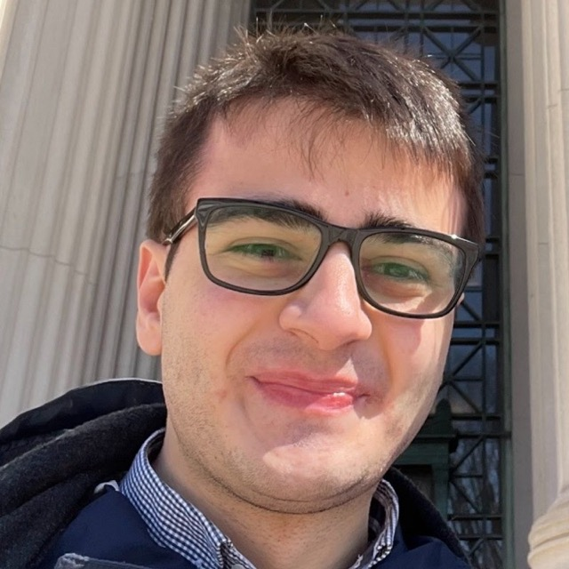
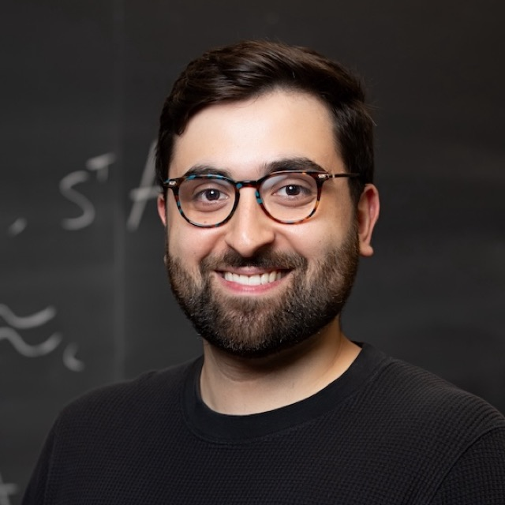

Institute for Responsible Superintelligence
RESI is a nonprofit research institute building the scientific foundations needed to make superintelligence safe by design. It is founded by researchers who have already turned seemingly murky concepts into precise definitions and usable mechanisms, in cryptography and other fields. The goal is to do the same for AI safety: safe-by-design means safety properties are specified in advance and achieved by mechanisms whose guarantees can be analyzed before deployment, rather than testing for safety problems post implementation.
Testing, benchmarking, and red-teaming are crucial for finding failures, but tests cannot establish that important classes of problems are absent. Across many fields, a deeper pattern has repeated. Notions that appeared to be inherently vague were given precise definitions, and unexpected inventions made those definitions usable for design. Safety shifted from something chased after the fact to a property that could be aimed for by construction.
Cryptography is a good example. Long ago, encryption schemes were ad hoc: constantly broken, red-teamed, and patched. Modern cryptography began when researchers formulated unexpected definitions of security and invented primitives (public-key encryption, digital signatures, and zero-knowledge proofs) that could satisfy them under explicit mathematical assumptions. Those inventions have withstood decades of attack and enormous increases in computing power. The same shift appears elsewhere. Early aviation relied on fly-fix-fly methods until phenomena such as turbulence could be modeled well enough to design against. Other enduring mechanisms, from auctions to contracts, can also achieve robustness by relying on incentives and laws we can understand.
RESI is a bet that this kind of shift is possible for superintelligence safety, and that it can happen by bringing together researchers who aim their efforts at responsible superintelligence, using frontier AI tools. RESI is founded by Turing Award winner and co-inventor of zero-knowledge proofs Shafi Goldwasser, renowned cryptographer Vinod Vaikuntanathan, and AI safety and ethics researcher Adam Tauman Kalai, who left OpenAI’s Safety Systems team to start the institute. Participating researchers will span computer science and other fields relevant to AI safety, including mathematics, economics and law, with an active visitor program. RESI is based in Cambridge, Massachusetts.
The concentration of talent is key. RESI aims to recreate the conditions which led to big ideas in the past, amplified by AI tools, with an open, mission-first culture that values sharing over being first to publish. Working groups will open new directions and revisit classical questions in light of superintelligence, while visitors will keep the institute connected to frontier labs and the scientific research community.
Mission
To build the foundations of safe-by-design superintelligence.
Outputs
RESI will develop an approach to AI safety that will remain relevant as intelligence increases. The approach calls for three types of outputs. First, we will map out which safety properties are meaningful, achievable under stated assumptions, or impossible. Second, we will develop mechanisms, protocols, and architectures that provide useful guarantees, and study whether those guarantees survive composition into larger systems involving models, tools, people, and institutions. As in modern cryptography, definitions and constructions develop together: a new protocol may reveal the right concept, and an impossibility result may show that a problem must be reformulated. Third, we will build implementations and proofs of concept of these constructions. Some constructions, such as harnesses, may be implemented at relatively low cost. Others may involve training entirely new frontier models, which requires resources well beyond what RESI expects to have initially. In that case, we will share proof-of-concept implementations so that frontier AI developers can evaluate and adopt them.
AI safety does not yet have a mature theory of definitions, constructions, composition, and impossibility comparable to modern cryptography. But early results already point in that direction: limits on inspection-based safety (including undetectable backdoors), definitions and mitigations for hallucinations as an incentive problem, undetectable watermarking of AI-generated content, and methods for boosting the safety of model ensembles under explicit assumptions. RESI exists to develop these seeds into a field aimed at superintelligence, where safety must be designed in rather than patched on afterward.
Harnessing the power of AI
Research at RESI is AI-assisted from the start. We will develop and continually improve harnesses that help theoretical alignment research using frontier agents throughout the research process, e.g., ideation, stress-testing definitions, writing and checking proofs, and turning theoretical ideas into experiments. These tools will let us explore new directions, iterate quickly, and tackle questions that might otherwise be out of reach.
Working Groups
Superintelligence safety has many aspects, and no single discipline sees the whole picture. RESI's working groups will open new directions and revisit many classical questions in light of superintelligence. Each working group will be organized by one or more leaders who will decide on its structure. The topics and working group leaders will be determined soon. Initial directions may include verification and delegation, modular architectures, incentives and strategic behavior, cryptographic mechanisms for AI safety, and legal mechanisms for superintelligence.
Culture
RESI’s culture is mission-first: open collaboration and early sharing of ideas. To protect junior researchers, we will actively support their credit and careers.
Founding Scientific Team
|
Inventor of zero-knowledge proofs and other seminal strands of modern cryptography. Turing Award winner. Selected publications
|
|
|
AI safety and ethics researcher coming from 2.5 years at OpenAI. Works in learning theory, game theory, and fairness, and bridges frontier-AI practice with theory. Majulook Prize winner. Selected publications
|
|
 |
MIT cryptographer and theoretical computer scientist with foundational contributions to lattice-based cryptography and fully homomorphic encryption. Gödel Prize winner. Selected publications
|
Research Team
|
Boston University. Design, analysis, and composition of cryptographic protocols. Program obfuscation and applications. Selected publications
|
|
|
MIT postdoc, PhD from Columbia. Works on practically motivated cryptography, ML, and watermarking for AI-generated content. Selected publications
|
|
|
|
UC Berkeley, Simons Institute for the Theory of Computing postdoc. PhD from EPFL. Works on AI safety and alignment using tools from cryptography and computational complexity. Selected publications
|
|
 |
Harvard economist and computer scientist working at the intersection of economic theory and theoretical computer science, including mechanism design and market design. ACM SIGecom Doctoral Dissertation Award winner. Selected publications
|
 |
PhD from UC Berkeley. Works on cryptography and foundations of AI. Selected publications
|
|
MIT cryptographer and theoretical computer scientist. Works on verifiable delegation, interactive proofs, and cryptographic protocols. Winner of the ACM Prize in Computing. Selected publications
|
|
 |
Assistant Professor at the Hebrew University Faculty of Law and School of Computer Science and Engineering. Selected publications
|
|
Associate professor at the Hebrew University and Berkman Klein Center Fellow at Harvard, working at the intersection of social cognitive psychology and neuroscience, with a focus on human–AI interaction and its implications for human flourishing. Selected publications
|
|
|
MIT roboticist and director of CSAIL working on autonomous systems, intelligence, and safe control and planning for embodied AI. MacArthur Fellow. Selected publications
|
|
 |
MIT postdoc and incoming professor at the Weizmann Institute of Science, PhD from UC Berkeley. Works on learning theory and its connections to cryptography. Selected publications
|
|
|
CEO and co-founder of Frontier Security. Previously VP at Cisco, CEO and founder of AI Security startup Robust Intelligence (acquired by Cisco), and Harvard professor of Computer Science and Applied Mathematics. Works on AI in cybersecurity, AI security, adversarial robustness, and robust optimization. Sloan Fellow. Selected publications
|
|
|
MIT mathematician working in AI-assisted mathematical discovery, formal verification, large-scale mathematical databases, computational number theory, and arithmetic geometry. Selected publications
|
 |
PhD candidate in CS at Stanford and JD from Stanford Law School. Works on LLM reasoning, safety, and factuality, with particular interests in understanding and mitigating hallucinations and evaluating AI systems deployed in high-stakes domains such as law and medicine. Selected publications
|
 |
Junior Fellow of the Harvard Society of Fellows, PhD from MIT. Works on cryptography and its connections to statistics and trustworthy AI. Selected publications
|
|
Alfred W. Bressler Professor of Law at Columbia. Works on evidence and criminal law, including interactions of technological and legal design for secrecy, authentication, and accountability. Selected publications
|
Operations
|
|
Emily Uyeda Kantrim’s work spans nonprofit, government, research, and social innovation, with a focus on turning ambitious ideas into durable institutions, scalable systems, and measurable public impact. From ideation to implementation, Emily has turned hand-sketched product designs into open-access tools for creation and entrepreneurship across six continents, scaled mobile public health operations from $4M to $93M in two years, and recognized an opening in municipal policy and built it into an operational social-service model that reached national adoption. |
Planned visitors
- Scott Aaronson (UT Austin)
- Boaz Barak (OpenAI)
- David Bau (Northeastern)
- Yonatan Belinkov (Technion)
- Avrim Blum (TTIC)
- Christian Borgs (Berkeley)
- Sebastien Bubeck (OpenAI)
- Nicholas Carlini (Anthropic)
- Jennifer Chayes (Berkeley)
- Andrew Critch (Encultured)
- Costis Daskalakis (MIT)
- Geoffrey Irving (Resolution)
- Sham Kakade (Harvard)
- Ehud Kalai (Northwestern)
- Tal Malkin (Columbia)
- Moni Naor (Weizmann Institute)
- Orr Paradise (EPFL)
- Manish Raghavan (MIT)
- Omer Reingold (Stanford)
- Alon Rosen (Tel Aviv University)
- Jacob Steinhardt (Transluce, UC Berkeley)
- Jacob Tsimerman (OpenAI)
- Santosh Vempala (Georgia Tech)
- Daniel Wichs (Northeastern)
- Or Zamir (Tel Aviv University)
Affiliated groups
- Resolution
- Cambridge Boston Alignment Initiative (CBAI)
- Simons Institute for the Theory of Computing
- UT Austin Theory and AI Alignment Group
FAQ
- Why the RESI acronym? IRS was already taken, and RESI (for REsponsible SuperIntelligence) is also the beginning of RESIlience.
- What does success mean for RESI? The ultimate success would be new safe-by-design approaches adopted in frontier AI systems: breakthroughs comparable to foundational cryptographic primitives. Progress toward that goal includes rigorous definitions of safety objectives, maps of what is and is not achievable under explicit assumptions, new mechanisms with useful guarantees, results on how guarantees compose, and working demonstrations in real systems. Success also means influencing policy and regulation in ways that support human flourishing.
- How will RESI’s ideas become adopted? Through design, people, and incentives. RESI designs with practical constraints in mind and tests promising constructions in real systems. It is connected to frontier labs through the experience of its researchers and through regular visitors and speakers, allowing ideas to travel with the people who carry them. Meanwhile, frontier models already face release barriers due to safety considerations. As capabilities increase, developers will face stronger safety, reliability, and deployment requirements. Approaches that provide greater assurance while preserving usefulness can reduce deployment risk and offer incentives for adoption.
- How is RESI different from other AI safety initiatives? RESI focuses on the formal and design-oriented foundations of AI safety: precise safety objectives, explicit assumptions, mechanisms and architectures with analyzable guarantees, composition of those guarantees, and impossibility results. The goal is to develop approaches intended to remain meaningful as systems become superintelligent. This complements work on evaluation, interpretability, alignment training, control, and safeguards for existing models. RESI is also distinctive in who is building it: it is led by researchers with a track record of turning vague concepts into precise definitions and usable mechanisms, from cryptography and other fields, and it is organized by those researchers.
- How will RESI stay up to date with frontier research? RESI combines researchers with recent frontier-lab experience, regular engagement with researchers at leading labs, a continuing visitor and lecture program, and practical testing of promising ideas on current systems. Its research agenda will evolve as capabilities, architectures, and deployment practices change.
- Is this approach fast enough? It has to be, and there is reason for optimism. Foundational fields can move quickly once the right people converge on the right questions, as happened repeatedly in modern cryptography, and RESI is built to concentrate that process and accelerate it with frontier AI tools. Nor does progress depend on one all-or-nothing breakthrough: definitions, impossibility results, and mechanisms can inform current systems along the way. Foundations take time to mature, but they are hardest to build once a crisis has arrived. The best time to begin was long ago; the second best is now.
- What does superintelligence mean? Superintelligence means systems that greatly exceed individual humans, and potentially expert teams, across a broad range of cognitive tasks.
- How does superintelligence differ from AGI? Artificial General Intelligence usually means matching humans across a broad range of tasks; superintelligence means substantially exceeding that level. Current AI is jagged, already superhuman in some domains and subhuman in others. RESI’s practical concern begins when systems exceed our ability to test and oversee them, because past that point safety must be designed in. In some domains, that point is already here.
- How can science study something that doesn’t yet exist? The principles and constraints that any system has to satisfy can be studied and built upon. Much of computer science and engineering falls within what Herbert Simon called the “sciences of the artificial,” which ask not only how existing systems behave, but what systems can be designed. Modern cryptography did not emerge merely from studying the ciphers of the time, but from analyzing what can and cannot be done.
- How can I get involved? Sign up for our mailing list here. RESI will host a small number of researchers and visitors. We welcome inquiries from scientists whose tools could bear on these problems, whether or not they have worked on AI safety before. Email us at hello@resi.org. Local students interested in AI safety may also want to look at CBAI.
Funding
RESI is fiscally sponsored by the Edward Charles Foundation, a 501(c)(3) public charity. RESI is funded through philanthropic donations, and our list of funding supporters will be announced shortly. Individuals can give at every.org/resi. Contributions of cash, stock, and other assets are tax-deductible to the extent permitted by law. Donations will enable us to bring in more researchers (especially postdocs and junior researchers) and further accelerate our research using AI. To donate or discuss other forms of support, including compute credits or infrastructure, contact funding@resi.org.